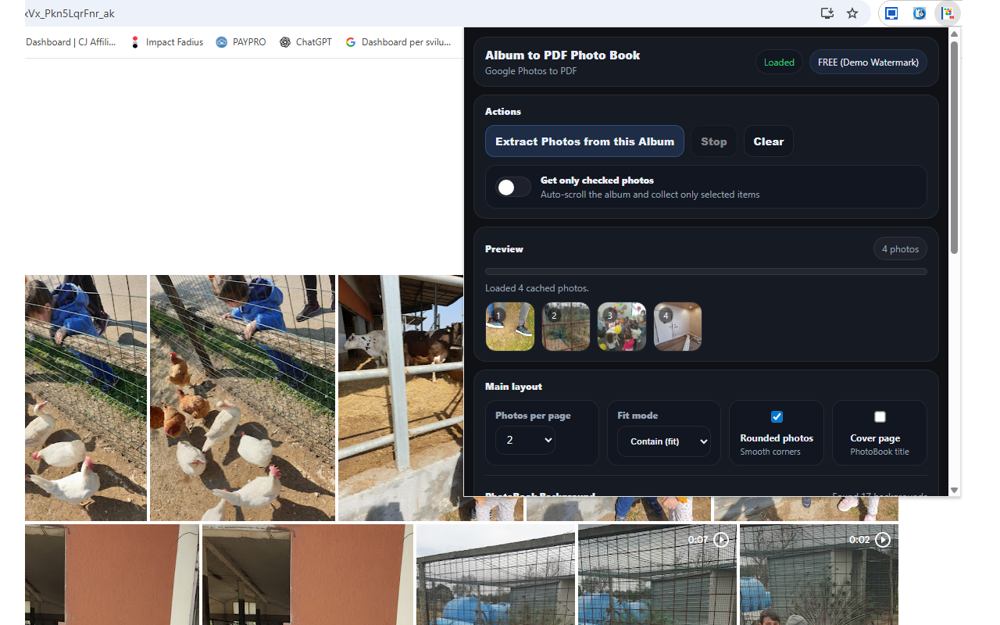
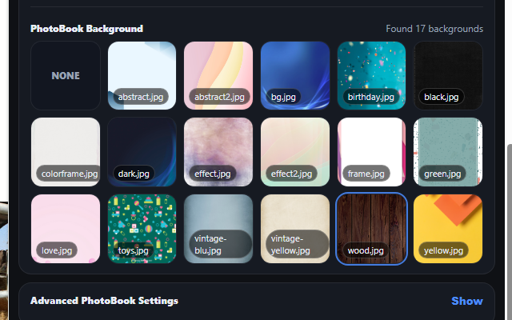

Google Photos Album to PDF Book
Transform your Google Photos albums into beautiful PDF photo books 📚. With Album to PDF Book, you can create stunning, printable photo books from your precious memories in just a few clicks. This powerful Chrome extension extracts photos from any Google Photos album and transforms them into professionally formatted PDF documents ready for printing or digital sharing.
No more expensive photo book services or complicated design software. The extension handles everything automatically—extracting high-resolution photos, arranging them in elegant layouts, adding customizable borders and captions, and generating a print-ready PDF. Preview your photo book in real-time before downloading the final document.
One of the standout features is the flexible layout system 🎯. Choose how many photos to display per page: 1 photo for full-page impact, 2 photos for balanced layouts, 4 photos for compact albums, or 6 photos for maximum content. Each layout is professionally designed with proper spacing, margins, and alignment for beautiful results whether viewing on screen or printing.
Customization options let you create the perfect photo book. Add elegant borders around your photos, include captions with photo names or custom text, choose portrait or landscape orientation, and select from multiple page sizes including Letter, A4, and Legal. Create a professional cover page with your album title and custom styling.
The generated PDFs are optimized for both digital viewing and high-quality printing. Photos are embedded at their original resolution for crisp, clear prints. Perfect for creating physical photo albums at home, sending to print services, or sharing digitally with family and friends.
📋 How to Use
- Install the extension from the Chrome Web Store
- Navigate to any Google Photos album you want to convert.
- Click the extension icon to open the control panel.
- Click "Extract Photos" to automatically collect all images from the album.
- Choose your layout: photos per page, orientation, and page size.
- Customize styling: borders, captions, margins, and cover page.
- Click "Create PDF Book" and watch your photo book being generated.
- Preview the result and download your finished PDF.
📷 Screenshots


✨ Key Features
- Easy Photo Extraction — Automatically scrolls and extracts high-res photos from Google Photos albums
- Flexible Layouts — 1, 2, 4, or 6 photos per page with professional spacing
- Multiple Page Sizes — Letter (8.5×11"), A4, Legal, and more
- Portrait & Landscape — Choose the orientation that fits your photos best
- Elegant Borders — Add stylish borders around each photo
- Photo Captions — Include filenames or custom text under each image
- Custom Cover Page — Add a professional title page with your album name
- Page Numbers — Automatic page numbering for easy navigation
- High-Resolution Output — Photos embedded at full quality for sharp prints
- Real-time Preview — See your photo book before downloading
- Print-Ready PDF — Optimized for home printing and professional print services
- Dark Theme Interface — Professional, easy-on-the-eyes design
🎯 Perfect For
- Creating printed photo albums at home
- Family photo books and precious memories
- Travel and vacation photo journals
- Wedding and anniversary albums
- Baby's first year photo books
- School yearbooks and graduation memories
- Portfolio presentations for photographers
- Real estate property photo books
- Product catalogs and lookbooks
- Memorial tributes and dedications
- Gift photo books for family and friends
- Archiving digital photos in printable format
🔒 Privacy & Security
- Works entirely in your browser — no uploads to external servers
- Your photos stay private on your computer
- No account required
- No data collection
With Album to PDF Book, creating beautiful photo books has never been easier. Whether you're preserving family memories, creating gifts for loved ones, or building a professional portfolio, this extension gives you print-quality results with just a few clicks. No design experience needed—everything works right in your browser. 📚
⬇️ Download from Chrome Web Store